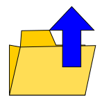
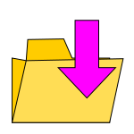
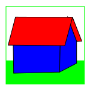
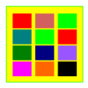
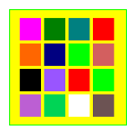

XTG
 Previous
Previous
Selects the previous collection by referring to the History.
 Next
Next
Selects the next Collection using the History.

Select Collection.Opens the load menu that allows you to select a data collection from a source and load it into memory. The Load Collection menu can also be used to select another collection already in memory. The sequence of steps from one collection to another is stored in the History.
Reload collection.
Reloads the Collection. This function reloads the selected Collection, discarding any changes. NOTE: The operation of this option depends on the type of sources from which the collections were loaded, so in some cases it may not work for technical reasons.
Save All Changes.
Save all changes.

Save Changes 4.Save changes.
 Save As.
Save As.
Save the data from the selected Collection to a file with a new name.
Refresh view.
Refreshes the table by reloading the values from the selected Data Collection.
 Reset
Reset
Resets the program to its initial state, avoiding the user having to reload the web page.
 Snap shot
Snap shot
Takes a snapshot of the current user view, making it available for saving in a new window.
Collections
Shows the list of collections currently loaded in memory.
History
Show History.
Log
Shows the log of events and operations performed by the application.
tree
Show semantic tree.
cdf
Open the To Do List.
Disk
Select the disk collection available.
XTG
Open the filesystem browser.
Dashboard
Shows the main dashboard.

LuigiShows the user's home page.
Shell
Opens a DOS shell.
Root
Select the root directory (e.g. C:\).
Back
Move up the directory tree to the previous directory.
Open Resources
This feature allows you to view or listen to any multimedia resource associated with the tuple. selected.
Edit Resources
Open the selected file using the same program normally used to create it.
Edit
Open the selected file using a text editor.
 PATH
PATH
Null function.
Submit PATH
Set path.
Copy File.
Prepare the selected file for copying (copy and paste functions).
Paste File.
Paste the selected file.
New File.
Creates a new file of the selected kind.
Delete File.
Delete the file.
 Change value.
Change value.
Opens a dialog box displaying the value of the selected cell, supplemented by any additional information, offering the option to edit the value if necessary. The information provided and the options for modifying the value depend on the selected data type.
 Edit Record.
Edit Record.
The Edit Tuple feature allows you to explore the selected Data Collection by representing the records (i.e., tuples) as cards rather than as rows in a table. The card representation facilitates the study of records with a large number of fields, allowing for a more compact representation.
Tags.
Opens the Tag Manipulation Menu.
 Filter JS.
Filter JS.
The "Filter JS" tool allows you to set filter conditions using the full expressive power of JavaScript. Clicking on the icon opens a dialog box where the user can enter a filter condition written in JavaScript. After confirmation, the program will update the list of the displayed records, showing only the tuples that meet the condition set.
 Wizard.
Wizard.
Create a filter condition using a wizard. Clicking on "Filter-2" opens a dialog box that facilitates the creation of complex filter conditions that require the use of logical connectors (AND, OR, etc.). After confirmation, the program will update the list of displayed records, showing only the tuples that satisfy the condition set.
 Filter Query by Example.
Filter Query by Example.
Query by Example filter.Opens a dialog box showing the organization of the fields of the records in the considered collection. The user can fill in one or more fields by entering the strings corresponding to the prefixes to be searched for. After confirmation, the program will update The list of records displayed showimg only the tuples that meet the specified condition.
 Filter String.
Filter String.
The "String Filter" allows you to set a search condition based on the text contained in the boxes of the considered field. Clicking on the icon opens a dialog box where the user can enter the character string he/she wish to search for. After confirmation, the program will update the list of displayed records, showing only the tuples that meet the condition set.
 Filter Equal.
Filter Equal.
The "Equal Filter" selects all records with the same value as the selected cell. Clicking on a cell in a table selects both a value (the cell's value) and a field (the one corresponding to the column to which the selected cell belongs). Clicking "Equal Filter" selects all rows in the selected column with the same value as the cell selected.
 Toggle Filter.
Toggle Filter.
Toggles the selection back to displaying the entire collection, i.e., all the records it contains.
 Invert Filter.
Invert Filter.
Toggles the filter to show records that do not match the specified conditions.
 Clear selection.
Clear selection.
Clear the selection. Clears the previously set filter condition.
 Go to line
Go to line
Moves the cursor to select the user-specified record (among those meeting the filter conditions).

Show Dir ImagesShows the images contained in the directory selected.
 Slide
Slide
Shows images in the selected directory as if they were slides.

Show ImagesShows images in the current directory.
Number of columns
Sets the number of images that can be displayed per row.
 Layout
Layout
Shows the record layout of the selected Collection allowing you to change it.
 Field Layout
Field Layout
Shows the record layout properties of the selected column.
 Config. UsrView
Config. UsrView
Opens the panel that allows you to edit the parameters associated with the Collection selected.
 Collection URL
Collection URL
Opens a window that shows the URL corresponding to the selected collection. NOTE: This information may sometimes not be available.
 Edit Collection
Edit Collection
Allows the user to view the collection by opening the corresponding file with a text editor.
 JS-Int
JS-Int
Opens a terminal window to allow the user to manipulate collection data using the JavaScript interpreter.
 Calculator
Calculator
Show the calculator.
 VLS
VLS
Open the application "Vediamo/Let's See". Camera.
 WE4
WE4
Open the "Web Editor 4" application.
Image width
Opens a window that allows you to set the width of the displayed images.
Rem Scan
Given a directory containing files compliant with the OLS search standards, OLS analyzes the contents of the files and generates the clipboard table. (remarks).
 Insert remark
Insert remark
Insert an annotation (remark).
 Remarks
Remarks
Show the annotations table (Remarks).
 Configure.
Configure.
Opens the configuration window.
 Help.
Help.
Opens the context-sensitive Help screen, displaying information about the functions available in the given context.
 About.
About.
Shows general information about the author and license terms.
 Test-1
Test-1
Test code.
NL command
Null function.
Submit command
Run Command